protocol'white-paper {2017-03-20},
name::
* McsEngl.Chrono.tech'whitepaper,
* McsEngl.whitepaper-of--ChronoBank-Đservice,
addressWpg::
* https://chronobank.io/files/whitepaper.pdf,
* https://github.com/ChronoBank/Documentation/blob/master/whitepaper.pdf,
CHRONOBANK - PHASE 1: A NON-VOLATILE DIGITAL TOKEN BACKED BY LABOUR-HOURS
THE CHRONOBANK TEAM
CHRONOBANK.IO
INFO@CHRONOBANK.IO
{Retrieved 2017-03-20},
Abstract
This whitepaper abstractly describes a system designed to tokenise labour-hours using blockchain technology.
ChronoBank is a proposed implementation of the described system that can be deployed in several economic localities.
The proposed system leverages smart contract techniques to automate a process whereby a country-specific ‘labour-hour’ token may be redeemed for real labour-hours via legally binding (traditional) contracts with labour-offering companies.
The proposed ‘stable-coin’ implementation provides a non-volatile, inflation-resistant digital asset transfer system.
1. Introduction
With the advent of cryptocurrencies, relatively instant low-cost transfers of value have become a reality.
Blockchain technology, which is a defining feature of most cryptocurrencies, has recently been applied to solve a great variety of problems.
Currently the most widespread implementation of blockchain technology is Bitcoin [ 1 ], which is a simple asset transfer system.
The asset in Bitcoin’s case is a bitcoin (BTC).
The value of this token has seen rapid variation since its inception in 2009, which has hindered its feasibility as a global currency.
There have been a variety of attempts to realise the advantages of blockchain technology while simultaneously mitigating issues regarding the stability of value for cryptocurrency applications.
To achieve this, many attempts employ the notion of a stable-coin, whereby each token of value in the system has a counterpart of equal worth stored in a non-digital and tangible form in the ‘real world’.
Two example implementations of the aforementioned stable-coin paradigm are listed below:
USDT by Tether[ 2 ]:
Each USDT token is backed by an equivalent amount of United States Dollars (USD) held in a reserve account by the private company Tether Limited.
Digix[ 3 ]:
Each token is backed by an equivalent amount of gold, which is stored in reserves by a dedicated precious metal storage custodian.
In both examples, it is always possible for a token holder to redeem that token for its counterpart, thus ensuring its fundamental ‘stable’ value.
Another notable example of a stable-coin is Bitshares [ 4 ], which attempts to decentralise the entire system through the use of digital Contract For Differences (CFD) [ 5 ] interactions.
The system presented in this whitepaper does not attempt to achieve decentralisation, but instead attempts to address some of the drawbacks surrounding existing centralised stable-coins.
These drawbacks include difficulties regarding the storage of physical or economic wealth, and the increasing likelihood of attacks, as a single entity centralises the entire wealth of the system.
Typical stablecoins are also subject to fluctuations in the value of their underlying asset.
While these fluctuations are usually very small when compared with fluctuations in traditional cryptocurrencies, they are still significant.
For example, USDT is subject to the devaluation of USD due to inflation.
In this paper, we propose a stable cryptocurrency system which addresses the aforementioned drawbacks of existing stable currency solutions.
Specifically, we propose a new type of token which is not backed by any existing fiat currency or physical store of wealth, but instead is backed by legally binding contractual obligations to provide real-world labour-hours.
As such, the system and its controlling entity are not responsible for the centralised storage and management of wealth.
Further, the value of an unskilled labour-hour in a particular geographic region naturally adjusts according to economic conditions such as inflation, thereby maintaining the long-term intrinsic value of the cryptocurrency.
This paper is organised as follows:
In Section 2 we provide an overview of the system as a whole before discussing the technical details of the necessary system components and processes.
Section 3 provides economic considerations in brief, regarding the real-world deployment of this system and its feasibility.
Finally, Section 4 discusses future directions and applications of the system and of ChronoBank.
The appendix of this document provides supporting reference of several concepts introduced throughout the paper.
In particular Appendix B and C list the variables that encapsulate the functionality of the system.
These variables are also summarised in Table 1.
2. The ChronoBank System
Similar to existing stable-coins (such as USDT by Tether and Digix), we propose a centralised entity that coordinates the creation, redemption, and destruction of Labour-Hour Tokens (LHT).
We refer to this entity as the ChronoBank Entity (CBE).
It is responsible for the acquisition and coordination of legally binding contracts for labour, in addition to the creation and dissemination of LHT.
Ultimately the role of the CBE is to ensure the stability of the LHT system through careful management of the system’s underlying processes.
This section will provide details describing the proposed processes, practices, and operations undertaken by the CBE and its associates.
An overview of the functionality of the ChronoBank system’s
constituents is shown in Figure 1.
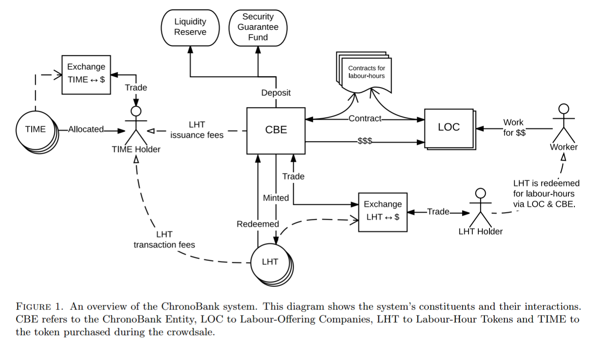
Figure 1.
An overview of the ChronoBank system.
This diagram shows the system’s constituents and their interactions.
CBE refers to the ChronoBank Entity, LOC to Labour-Offering Companies, LHT to Labour-Hour Tokens and TIME to the token purchased during the crowdsale.
The system as a whole is designed with the intent of a single deployment per economic region.
For instance, the system could be deployed once in Australia using the value of one labour-hour in the Australian economy, measured in Australian dollars.
As this document is an abstract description of the system, it does not refer to any region-specific implementation but instead refers to generalised system parameters that must be tailored for each region.
With few exceptions, all processes and structures described in this document may have slight variations in implementation between regions in which ChronoBank operates.
The initial implementation of the CBE will utilise the Ethereum[ 6 ] blockchain; however, future implementations may tokenise assets on alternative blockchain systems (e.g. Waves [ 7 ], Bitcoin [ 1 ]) when it is deemed appropriate.
The CBE provides economic benefit both to the environment in which it is deployed, and to a group of stakeholders that assist the CBE by providing initial operating capital.
Unlike the region-specific deployment of the CBE system, only one group of CBE stakeholders (a.k.a. TIME token holders) exists globally.
These stakeholders provide initial operating capital to the CBE in the form of both fiat and cryptocurrencies, in exchange for a portion of future profits attained by the CBE.
2.1. Stakeholders & TIME Tokens
In order to fund the development and operation of the ChronoBank system, there will be a fundraising phase known as the crowdsale.
During the crowdsale, individuals may purchase TIME tokens at a fixed rate, which provides the token holder with the right to receive a proportion of the profits arising from the operation of the system.
In addition to the entitlements regarding the system’s operating profit, holders of TIME tokens will also be granted the right to vote on important decisions regarding the ChronoBank system.
TIME tokens will be developed utilising the Ethereum ecosystem, specifically leveraging the ERC20 token standard[ 8 ].
The ERC20 specification will be extended to provide voting functionality and rewards distribution; this is discussed further in Sections 2.1.3 and 2.1.2 below.
2.1.1. Crowdsale
During the crowdsale, TIME tokens will be created as necessary and sold at the fixed price of 100 TIME tokens for 1 bitcoin (BTC).
There is no limit to the number of TIME tokens generated during the crowdsale; however, no further TIME tokens will be generated after this phase of the project.
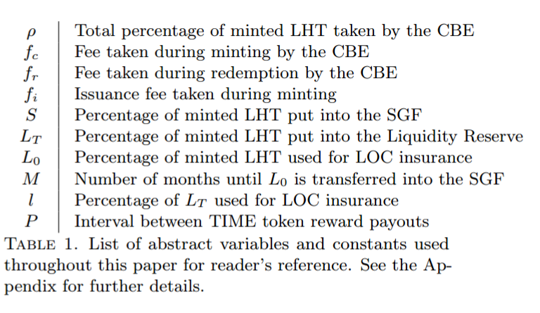
| ρ
| Total percentage of minted LHT taken by the CBE
|
| fc
| Fee taken during minting by the CBE
|
| fr
| Fee taken during redemption by the CBE
|
| fi
| Issuance fee taken during minting
|
| S
| Percentage of minted LHT put into the SGF
|
| LT
| Percentage of minted LHT put into the Liquidity Reserve
|
| L0
| Percentage of minted LHT used for LOC insurance
|
| M
| Number of months until L0 is transferred into the SGF
|
| l
| Percentage of LT used for LOC insurance
|
| P
| Interval between TIME token reward payouts
|
Table 1. List of abstract variables and constants used throughout this paper for reader’s reference. See the Appendix for further details.
All TIME tokens purchased during the crowdsale will constitute 88% of the total TIME tokens generated during the initialisation of the ChronoBank system.
The remaining 12% of tokens will be split with 10% given to the ChronoBank.io team (for ongoing research and development) and 2% to advisors and early adopters of the system.
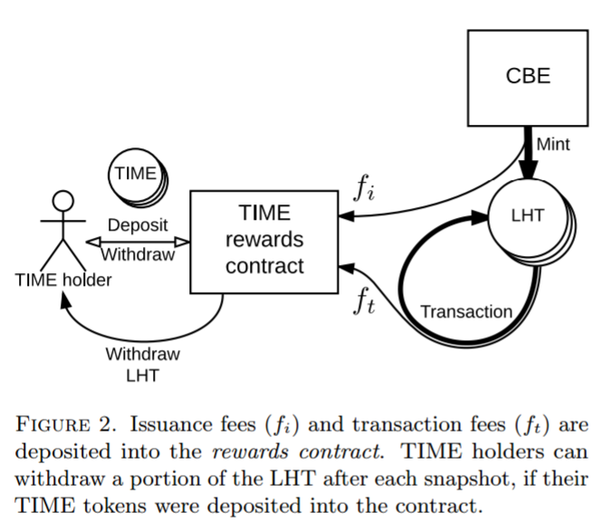
Figure 2.
Issuance fees (fi) and transaction fees (ft) are deposited into the rewards contract.
TIME holders can withdraw a portion of the LHT after each snapshot, if their TIME tokens were deposited into the contract.
2.1.2. TIME Token Rewards
For the use of the LHT, users will be charged a fixed fee, ft = 0.15% on all transactions.
Complementary to transaction fees, issuance fees (fi) will be taken during the minting process (further details in Section 2.2.1).
The issuance fees will start at 3% during the first year of operation and will stepwise decrease by 1% each year until a final issuance fee of 1% is achieved and maintained.
Both the transaction and issuance fees will be automatically collected and sent to a rewards contract on the Ethereum blockchain as shown in Figure 2.
The rewards contract is designed such that TIME token holders can withdraw their earned rewards in a manner that makes them non-unique (i.e. withdrawal of rewards is not tracked on a per-token basis) and hence tradeable on exchanges for equal value.
The rewards contract will allow TIME token holders to retrieve their rewards at regular payout intervals, P.
At any given stage, TIME holders may deposit their tokens into the rewards contract.
At the onset of a payout interval, a snapshot of deposited TIME tokens and the current contract reward balance will be taken.( 1 )
The rewards will be divided equally among the TIME tokens that were deposited at the time of the snapshot.
Depositors may then withdraw their share of rewards during the following payout interval.
At the next payout snapshot, any unclaimed rewards will be forfeited and added to the total balance of that snapshot.
Figure 3 illustrates this concept by plotting the rewards contract balance over time.
We also note that we expect P to be of the order of a few months.
TIME holders may deposit and withdraw their TIME tokens at any stage, however only TIME holders who have deposited before the snapshot of each payout interval can claim rewards.
Withdrawing TIME tokens from the contract will also withdraw any rewards currently owed to the depositor.
TIME holders may also leave their tokens deposited in the rewards contract indefinitely and claim their rewards periodically.
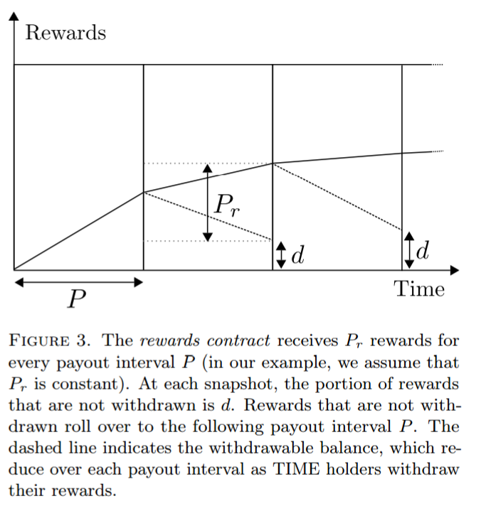
Figure 3.
The rewards contract receives Pr rewards for every payout interval P (in our example, we assume that Pr is constant).
At each snapshot, the portion of rewards that are not withdrawn is d.
Rewards that are not withdrawn roll over to the following payout interval P.
The dashed line indicates the withdrawable balance, which reduce over each payout interval as TIME holders withdraw their rewards.
This reward payout system gives upper bounds to the amount of rewards that can be stored in the contract in any interval, under some reasonable assumptions.
The total rewards obtained via fees for a particular payout interval, P, is Pr.
If we assume a constant amount of transaction and issuance fees per payout interval (i.e. a constant Pr), and an average percentage of locked TIME holders that do not withdraw in any payout interval, d, we can calculate the upper bound of the LHT stored in the smart contract through the limiting geometric series relation( 2 ):
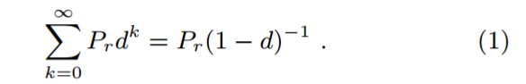
To clarify this, let us take a conservative estimate, that 90% of all locked TIME token holders do not withdraw their rewards in every payout interval (only 10% actually withdraw).
In this scenario, no more than 10Pr worth of rewards will be stored in the rewards contract at any given time.
A less conservative estimate, being 50% of locked TIME holders withdrawing each payout interval, will ensure the rewards contract never contains more than 2Pr worth of rewards.
Through the careful (and potentially dynamic) choice of P we can find a balance between practicality (frequency of reward withdrawal) and security (safe level of stored value in a smart contract).
2.1.3. TIME Voting
From time to time, the CBE may hold polls on the Ethereum blockchain to elicit the opinion of TIME token holders.
Poll results will be incorporated into decisions made by the CBE concerning the financial or technical direction and/or implementation of the CBE system.
Only valid TIME holders are considered current stakeholders in the CBE system and are the only parties authorised to participate in a poll.
2.2. Labour-Hour Tokens
Labour-Hour Tokens (LHT) are the fundamental unit of value within the ChronoBank system.
The purpose of these tokens is to provide a non-volatile, inflationary-resistant digital store of value on various blockchains.
We envisage these tokens for utilisation in future systems, such as LaborX (see Section 4 for a brief overview).
A Labour-Hour Token will be derived from a standard Ethereum ERC20 token and will be tradeable on all major exchanges.
The ChronoBank system will ensure that these tokens will always have a 1 to 1 mapping with legally bound promises of labour-hours from various Labour-Offering Companies (LOC).
As such, token holders may also redeem these tokens at any given time for their real-world labour-hour counterpart.
This section details the various processes required to feasibly sustain the 1 to 1 mapping of LHT to offered labour-hours and ensure the economic stability of the ChronoBank system.
2.2.1. Minting
The minting process takes place when a company offering labour-hours (Labour-Offering Company (LOC)) chooses to enter into a legally binding agreement with the CBE.
The CBE must then run strict checks (the guidelines of which are described in the business outline [ 9 ]) of the LOC wishing to participate in the ChronoBank system.
Once the LOC is approved, the CBE and LOC will negotiate on various parameters (summarised in Appendix B) before entering a legally binding contract whereby the LOC promises labour-hours in exchange for LHT (or the fiat equivalent).
The CBE will then publish a hash of the contract on the Ethereum blockchain and store the contract on a decentralised storage system such as IPFS [10] or SWARM [11].
This gives a transparent ledger detailing the current state of the backed LHT.
The exact mechanisms behind the minting process are non-trivial and we refer the reader to Figures 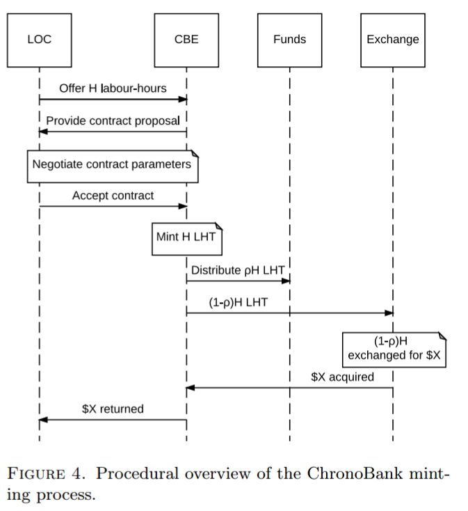
When an LOC and the CBE have agreed on terms, the CBE mints the equivalent amount of LHT as labour-hours offered by the LOC, ensuring the 1 to 1 relationship between the two.
Of the newly minted tokens, the CBE will retain ρ percent( 3 ), providing the remaining (1 - ρ) of minted LHT to the LOC.
In practice, the CBE can sell the (1 - ρ) of minted LHT on exchanges and provide the LOC with the fiat equivalent, should they not wish to deal with cryptocurrencies.
The ρ percent held by the CBE will be immediately subdivided into the following portions (shown diagrammatically in Figure 5).
• fc ;sblisin; [0, 0.01] - A fee charged by the CBE for services provided.
• fi - The issuance fee which will go to the rewards contract for TIME token holders (see Section 2.1.2).
• S - A portion to be sent to the Security Guarantee Fund (SGF) (see Section 2.3.2).
• LT - The total portion sent to the Liquidity Reserve (Section 2.3.1). This fund is further split by a variable percentage, l, into LI (LOC insurance) and L0 (liquidity) (see Section 2.3.1 for further details).
For clarity, we write the obvious explicit relation,
ρ = fc + fi + S + LT . (2)
We expect that the system will maintain fixed fees, but will vary S, l and LT (and hence ρ) on a case-by-case basis to control the stability and viability of the ChronoBank ecosystem.
The purpose of the Liquidity Reserve and Security Guarantee Funds are detailed in the Funds Section (2.3) and a brief discussion of the economic feasibility of this system is discussed in Section 3.
Figure 4.
Procedural overview of the ChronoBank minting process.
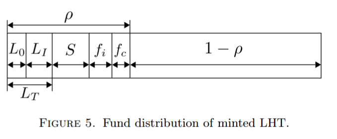
Figure 5.
Fund distribution of minted LHT.
2.2.2. Redemption
As LHT are fundamentally backed by real-world labourhours, holders may redeem their tokens at any time for these backed hours.
To do so, holders will deposit their LHT into a redemption contract on the Ethereum blockchain.
Along with the deposit, holders will provide relevant data detailing their redemption request, such as labour type(s), location(s) of work, date/time of work, contact information, etc.
The request will trigger the CBE to search and match relevant LOCs to the redemption request.
If found, the CBE will return the most suitable LOCs that fit the request.
To discourage recurrent requests and to remunerate the CBE for its service, the CBE will take a small fee, fr ;sblisin; [0, 0.01] from the deposited tokens.
The amount of labour-hours matched will be less than or equal to the LHT tokens deposited, less the CBE’s fee.
Any unmatched requests or unfulfilled hours can be withdrawn from the redemption contract by the depositor.
As a redundancy, the redemption contract will have a built-in holding period, after which depositors may withdraw their deposited LHT.
This protects depositors from inactive or stagnant CBEs.
Once the CBE has returned a list of compatible LOCs, a depositor may accept or reject the offered LOC(s).
If rejected, the depositor can withdraw their deposited LHT less the CBE’s service fee.
If accepted, the CBE will advise the chosen LOC of all relevant details.
The redemption contract will hold the LHT until the work has been completed and the depositor is satisfied.
A dispute resolution system may be used to ensure work is completed as requested.
Once the labour has been satisfactorily completed, the deposited LHT will be destroyed, again ensuring the 1 to 1 relationship of LHT to backed labour-hours.
2.2.3. Intrinsic Value
We have thus far ensured a 1 to 1 correspondence between LHT and labour-hours but have not yet defined the value of either.
The intrinsic value of one LHT and thus one labour-hour is region-dependant.
Although any arbitrary value can be chosen, we peg the value of one LHT to be roughly the average hourly wage of a region for practical reasons.
The average hourly wage of a region will be defined via the official statistics bureau of that specific region.
If one were to trivially adjust the LHT to the most recent statistics released for a given region, the price of LHT would stepwise shift on the release date of the statistics.
Typically these statistics are released yearly and in such scenarios a predictive stepwise jump each year would occur.
To implement a smooth transition from one statistics point to another, we propose that the pegged price of LHT be a linear interpolation between the two points.
This would require the LHT price to lag behind the most recent statistics by the duration of at least one extra statistics release.
Let us illustrate this with a clear example, as depicted in Figure 6.
Let us determine the price of LHT during April, 2010 in a region where the statistics bureau publishes a data point in January each year.
This data point indicates the average wage in that region for the previous year.
The price will be calculated by retrieving two data points: A2008
and A2009, the average wage in 2008 (released in January, 2009) and the average wage in 2009 (released in January, 2010) respectively.
We take a linear interpolation between these two points to find the price of LHT in April, 2010.
In this example, this will over-approximate( 4 ) the average wage in April, 2008.
This example shows that the LHT price in April 2010 will be the over-approximated average wage in April 2008, demonstrating how the pegged price of LHT will lag behind the current actual average wage.
It should be noted that this doesn’t affect any aspects of offering or redeeming labour.
The value of labour offered or redeemed is independent of the price of a single LHT.
However, the value will be measured with respect to the fixed price of a single LHT token.
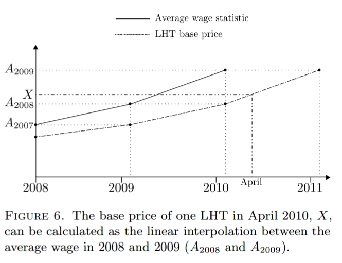
Figure 6. The base price of one LHT in April 2010, X, can be calculated as the linear interpolation between the average wage in 2008 and 2009 (A2008 and A2009).
For any given region, typically there are sub-regions which have varying costs associated with providing labour work.
We wish to integrate these costs within our definition of a single LHT.
To do so, we take the maximum of each cost within a sub-region and add it to the average wage of the region to provide the fundamental price of LHT.
Specifically we have:
L = (1 + max(Y )) X , (3)
where X is the linearly interpolated function of average wages described above and Y is the individual cost in a sub-region as a percentage of work done.
L as defined in equation (3) is the pegged price of LHT for any given region.
This value will vary linearly throughout each year in a transparent and predictable manner.
2.3. Funds
The uniqueness of backing a digital token with contractual debt requires various safeguards to ensure contracts are always upheld and potential defaulting is accounted for.
There are a number of adverse scenarios that can occur with a debt-backed system.
Our proposed solutions involve the careful maintenance of two extra funds, the Liquidity Reserve and the Security Guarantee Fund (SGF).
In this section we detail the operation of these funds and how they address some of the issues that can arise in this system.
2.3.1. Liquidity Reserve
The liquidity reserve is an offline LHT storage fund controlled by the CBE.
It receives a percentage, LT, of newly minted LHT during the minting process (Section 2.2.1).
There are two services that this function provides the ChronoBank system:
(1) LOC Risk Mitigation - During the minting process, an LOC will be paid (1 - ρ) percent of the labourhours they contractually agree to provide.
Therefore LOCs inherently take some risk in the form of immediate redemption.
If an LOC’s promise of
labour-hours is immediately redeemed, they stand
to lose ρ percent of these hours. To mitigate this,
the CBE will store a percentage of minted LHT,
LI (see Section 2.2.1) for each LOC, to reimburse
the LOC in the event that more than (1 - ρ) labourhours
are redeemed. LI will cover all excess (i.e. more than (1 - ρ) ) redeemed tokens until the reserve, LI , is depleted.
We formalise this by introducing the mitigated tokens payed to an LOC, LM, as
LM = min(LI, E). (4)
where E is the excess LHT to be redeemed by the LOC, defined as:
E =
a) R - (1 - ρ), if R > (1 - ρ).
b) 0, if R = (1 - ρ). (5)
with R being the total percentage of LHT redeemed.
The mitigation reserve, LI is not constant, but is gradually transferred to the SGF (Section 2.3.2).
The rate at which this fund is transferred is derived from the parameter, M, which specifies the total number of months until the funds are entirely transferred, and is negotiated during the minting process.
The mitigation reserve funds will be transferred monthly at a uniform rate (LI / M).
This procedure then allows the CBE to statistically choose ρ, LT and M given the risk profile and reputation of any given LOC during the minting process.
For example, ρ, LT and M can be designed such that within a 95 percent confidence interval, an LOC does not lose more than (ρ - ζ) worth of the labour-hours promised over a given time( 5 ).
Here ζ is a number that quantifies the risk that the LOC is willing to accept.
This degree of freedom allows the CBE to manage LOCs of varying risk profiles.
(2) LHT Liquidity - The price of LHT will ultimately be governed by the price at which the CBE buys and sells LHT( 6 ).
The funds used for this are stored in the Liquidity Reserve.
L0 of newly minted tokens (see Section 2.2.1) will be accrued in this fund.
The CBE will then stabilise the price of LHT and provide liquidity in various markets by buying and selling LHT at the fundamental price detailed in Section 2.2.3.
The parameter, l, chosen during contract negotiations, specifies the percentage of LT that goes to LI (the amount used for LOC insurance and which is gradually transferred to the Safety Guarantee Fund) and L0 (the amount that is permanently used for liquidity).
Through careful management of the parameter, l, the CBE can maintain the desired volume of funds in the Liquidity Reserve.
As this fund will hold both LHT and volatile currencies, care must be taken to manage volume due to the potential price fluctuations of the held currencies.
One immediate-use case of this fund will be in the initial system set-up.
When the first LOCs become part of the system, the freshly minted LHTs will need to be sold to transfer the resulting funds to the LOC.
Initially the demand for LHT will be low and funds from the Liquidity Reserve will be used to bootstrap this process.
A percentage of the crowdsale funds will be deposited into the Liquidity Reserve for this purpose.
2.3.2. Security Guarantee Fund
One of the major drawbacks in a debt-backed currency system is the possibility of backers (LOC in our case) defaulting on their contractual obligations.
Despite the care in vetting LOCs during the minting process, we expect there to be a percentage of companies that will inevitably default.
The SGF’s main purpose is to provide a fund reservoir as insurance to protect against defaulting companies.
In practice, this fund will burn held LHT tokens to the equivalent amount of outstanding labour-hours promised by the defaulting LOC.
Statistical estimates should be taken for the average probability of LOCs defaulting.
These estimates will give a measure defining the amount of LHT that should be stored inside the SGF fund at any given time.
The amount stored in the SGF will be proportional to the amount of debt, and hence be proportional to the amount of LHT in existence (as every LHT is backed by one owed labour-hour).
This required value can be reached and maintained through the management of the minting variables, S, l and LT .
3. Economic Considerations
In this section we briefly mention some interesting properties and immediate economic consequences of this system.
3.1. Economic Incentives
First and foremost, the system must be designed such that there are economic incentives for both LOCs and LHT holders to participate in the system.
For an LOC, the incentive to participate in the ChronoBank system comes in the form of an interest-free-like loan.
When an LOC agrees to participate in the system and offers labour-hours, the company effectively receives an interest-free loan, which needs to be paid back when their contract expires.
For this to be enticing to an LOC, we require that over the period of the contract the amount of money paid for the service of the loan is less than that of alternate means for loans, e.g. local bank loans.
We consider a simplistic example to demonstrate the feasibility of such a scenario.
Consider that a bank loan, which charges IB percent in interest per annum, has an upfront cost of C and is of total amount H.
Over a period of time, t, and assuming no regular repayments are necessary( 7 ), the LOC stands to lose:
C + H((1 + IB)t - 1) - HIIt. (6)
The first term corresponds to the upfront cost of the loan, the second term to total interest owed at time, t, and the final term is potential interest earnings from external investments.
Here we’ve defined an average yearly interest gain from external investments, II.
Alternatively, the LOC may participate with the ChronoBank system.
If the LOC offers H hours of labour, it would receive H(1 - ρ) LHT in return, and would be required to pay (1 + st)H worth of LHT back upon the expiration of the contract (assumed at time, t).
Here s is a percentage representing the average yearly price increase( 8 ) of LHT. It quantifies an inflated price of LHT due to an assumed increase in average wage over the contract period.
Therefore, with the ChronoBank system, the LOC stands to lose,
H(ρ + st) - (1 - ρ)H II t. (7)
The first term here originates from the initial sum taken by ChronoBank, Hρ, and from the price fluctuation of LHT over time.
The second term comes from the potential earnings from external investments with the (1-ρ)H LHT received.
In this simplistic example, an LOC would be economically incentivised to participate in the ChronoBank system if the total fees of the ChronoBank system are less than the total fees of the alternative bank loan, explicitly:
H(ρ + (s + ρII)t) < C + H((1 + IB)t - 1). (8)
Here, (s + ρII) represents the average yearly price fluctuation of LHT combined with ρ percent of an average expected investment return.
With the reasonable assumption that this quantity is less than the interest rate of a bank loan, IB, equation (8) can always be satisfied for some time period, t, given all other variables fixed. In fact, the longer the contractual time, t, the greater the cost-saving is to the LOC.
So in this simplistic example, wecan see that this system incentivises LOCs to participate in the ChronoBank system for longer periods of time( 9 ).
Furthermore, the CBE and LOC are able to adjust both H and ρ during the negotiations of their initial contractual agreement, enabling the tuning of economic incentives in less favourable economic regions/scenarios.
As for LHT holders, their economic incentive is more obvious.
LHT, compared to its stable-coin predecessors, is inflationary-resistant.
Therefore, holders should have an economic incentive to use LHT as its value should increase relative to local inflationary fiat currencies.
We should note that buying and holding LHT as an investment (and therefore decreasing the liquidity of the token) is not in a holder’s best interest, as the gains in doing so are often less than external investment strategies.
3.2. System Stability
This section is concerned with the ability of the ChronoBank system to sustain various economic hurdles, which we refer to as its stability.
The stability of the ChronoBank system hinges on the CBE correctly managing the minting process.
Through the minting process, the two funds, Liquidity Reserve and SGF, are controlled and maintained.
As the system grows, funds will accrue in both the Liquidity Reserve and the SGF.
LHT is only removed from the SGF in the event of an LOC defaulting.
The Liquidity Reserve only decreases in value in the event that a held volatile currency devalues.
Therefore, both funds should grow as the system evolves.
As the funds reach a sustainable level, the percentage of LHT taken during the minting, ρ, can be decreased, further enhancing the economic incentive for more LOCs to join the system.
A greater number of LOCs participating will mean a greater number of LHT in existence and a greater volume of funds accrued in both the SGF and Liquidity Reserve.
The stability of the system will be proportional to the value stored in the SGF and Liquidity Reserve and, therefore, we expect the system to become more stable as it develops.
3.3. Potential Pitfalls
A number of potential pitfalls can occur during the operation of this system.
In this section we briefly summarise the major and most obvious ones, along with our proposed solutions.
• An LOC defaulting on its promise of labour-hours.
As previously mentioned, this will be covered by the SGF.
The CBE will burn the necessary LHT from the SGF fund to maintain the 1 to 1 relation of LHT to labour-hours.
• Large supply/demand causing price fluctuations.
This can be handled by a sufficiently deep Liquidity Reserve, which will provide demand in times of high supply and vice versa.
Initially funds from the crowdsale will be placed into the liquidity fund, and as the system grows the liquidity fund will be maintained at a level deemed operationally safe to cover this scenario.
• Redemption of all LHT.
The LHT at any given time will always be backed by contractual labourhours in a 1 to 1 mapping.
Therefore, this scenario is possible and the system will continue to function in this event.
However, the risk in this occurrence lies with the participating LOCs, who will be required to pay back their LHT in the form of labour.
The SGF (Section 2.3.1) can also absorb some of the cost of this scenario.
It will be at the CBE’s discretion to use the SGF to assist in this very unlikely scenario.
• Increased demand at contract expiry.
As a contract expires, an LOC will be required to buy back an equivalent amount of LHT to the labour-hours that are left on the contract.
This could potentially create periods of large demand.
In these scenarios, we will counter the demand with the Liquidity Reserve and, if necessary, the SGF.
4. Future Work
Economic Models.
Key to the success of the ChronoBank system is an informed choice of the aforementioned economic parameters.
It is essential to perform further analysis so as to determine how parameter modification impacts the feasibility and sustainability of the system in a wider context.
This will necessarily be performed before a realworld implementation is constructed.
LaborX.
The digital asset transfer system described in this document is proposed as a first step towards a larger decentralised labour system.
LHT as described by this paper forms the base currency for a decentralised labour exchange platform entitled LaborX.
The intention of LaborX is to enable peer-to-peer exchange of labour-hours with LHT, thereby reducing the centralisation of the proposed ChronoBank system.
LaborX will incorporate a rating system whereby holders of LHT can identify fair trades by examining the quality and/or specialisation of the labour provider, given their history on the platform.
By enabling direct exchange of LHT with labour-hours, the system’s dependency on contractual arrangements with LOCs is significantly reduced.
This potentially reduces the cost and increases the stability of the system as a whole.
5. Conclusion
This paper proposes a non-volatile, inflationaryresistant, digital asset transfer system.
This innovative system is only made possible by recent advancements in blockchain and cryptographic technologies.
Leveraging these technologies, this system tokenises contractual debt in a manner that can be both economically feasible and highly practical for digital platforms, such as LaborX.
The intrinsic value of the proposed token mirrors the average hourly rate of human labour - the most fundamental unit of economic value.
References
[1] Satoshi Nakamoto. Bitcoin: A peer-to-peer electronic cash system. 2008.
[2] Tether.to. Tether: Fiat currencies on the bitcoin blockchain. 2014.
[3] Anthony C. Eufemio Kai C. Chng Shaun Djie. Digix’s whitepaper: The gold standard in crypto-assets. 2016.
[4] Fabian Schuh Daniel Larimer. Bitshares 2.0: Financial smart contract platform. 2015.
[5] Investopedia. Contract for difference.
[6] Gavin Wood. Ethereum: A secure decentralised generalised transaction ledger. Ethereum Project Yellow Paper, 2014.
[7] Sasha Ivanov. Waves whitepaper. 2016.
[8] Ethereum Request for Comments (ERC) 20.
[9] The ChronoBank Team. ChronoBank: Business Outline.
[10] IPFS: A peer-to-peer hypermedia protocol to make the web faster, safer, and more open.
[11] Viktor Tron Aron Fisher Daniel A. Nagy.
Notes
(1) The transaction for which may be initiated by anyone, but typically by the CBE.
(2) Assuming 0 ;sblle; d < 1.
(3) All percentages introduced in this document should be read as decimals. Hence (1 - ρ) ;sblge; 0.
(4) This is a poor approximation that assumes a linear growth, where the start of the year is the average wage of that year and the end of the year the is average wage of the following year.
(5) This can occur because the holdings of an LOC increase over time due to assumed external investment.
(6) Combined with the fact that one LHT has a fundamental intrinsic value of one labour-hour.
(7) We use a no-repayment loan to clarify the analogy to our system and remove some mathematical complexity which obscures our point.
(8) This could also potentially decrease.
(9) Adding regular repayments to bank loans adds complexity to this simplistic example and although decreasing the size of the right-hand side of equation (8) it does not change our final result.
Appendix A. Terminology
The following is a list of terms used throughout this document.
• CBE - The ChronoBank Entity.
• LHT - Labour-Hour Token.
• LOC - Labour-Offering Company.
• SGF - Security Guarantee Fund.
Appendix B. Minting Contract Parameters
There are number of parameters that are required to be negotiated during the minting process.
For clarity we list here the variables that should be considered and determined by the CBE during the minting process:
• S - A percentage of the minted tokens to be stored in the Security Guarantee Fund.
• LT - The total percentage to be stored in the liquidity fund.
• l - The percentage of LT dictating how much of the liquidity fund is used as LOC insurance, LI . The remaining funds will be kept for liquidity in L0.
• M - The total number of months until the LOC Insurance LI is transferred to the Security Guarantee Fund. This dictates the rate at which the funds are transferred, i.e. LI /M per month.
• Expiry Date - The expiry date of the contract, whereby the LOC must buy back the value of the minted LHT.
Through the definition of the above variables, the CBE on a case-by-case basis will fix ρ, the total percentage deducted from LOCs initially through the relation (2).
Appendix C. Fee Summary
The fees of the ChronoBank system can be summarised in the following:
• fc - This is the fee taken by the CBE during the minting process for services rendered. We expect fc ;sblisin; [0, 0.01].
• fi - This is the issuance fee, which will be taken during minting and deposited into the TIME token holder’s rewards contract. This will start at 3 percent and decrease by 1 percent each year until it is maintained at a steady 1 percent.
• ft - These are transaction fees, which are deposited into the TIME token holders rewards contract. This is a flat fee of 0.15%.
• fr - This is a fee taken by the CBE during the redemption process for services provided and to add a deterrent to continual redemption requests. We expect fr ;sblisin; [0, 0.01].
protocol'LaborX-white-paper (chblxw)
addressWpg::
* https://github.com/ChronoBank/Documentation/blob/master/laborx_whitepaper.pdf,
WORKING DRAFT: CHRONOBANK - PHASE 2: LABORX DECENTRALISED MARKETPLACE
THE CHRONOBANK TEAM
CHRONOBANK.IO
INFO@CHRONOBANK.IO
{retrieved 2017-03-20},
Abstract
In Phase 1, Chronobank introduced labour-hour tokens which represent the average value of one labour hour.
This phase involves the design and construction of a decentralised platform capable of making labour exchange as easy as riding a taxi with Uber.
This white paper describes a decentralised marketplace where people of real-world professions will be able to sell their labour to any participating client of the system.
LaborX is a proposed implementation of the described system.
This is a draft version of the white paper prepared for community review.
A Bounty of 1000 TIME tokens (an equivalent of 10 BTC) will be divided between the best contributors.
To participate, join our #whitepaper Slack channel.
To a get Slack invite, visit https://chronobank.herokuapp.com
1. Introduction
In 2009 (the same year that Bitcoin emerged), Uber, a mobile application which revolutionised the taxi business, was developed.
The easy to use, fast and comfortable service made Uber a worldwide company with $1.5 billion in revenue.
Uber removes the middleman – in its case, the taxi dispatcher - from the buyer/seller equation, allowing each driver to be his boss and work independently of a central company[ 1 ].
Similarly, LaborX aims to revolutionise the labour hiring industry by providing an open and decentralised ecosystem.
It has the potential to benefit both highly skilled workers, who prefer independence or a more flexible work schedule, as well as low-skilled labourers who will be able to find flexible part-time work when it is convenient for them.
LaborX targets offline workers providing real-life services which cannot be done remotely or supervised by special software.
The Problem.
Currently, numerous agencies are providing centralised services which offer to hire workers listed in their internal databases.
The reputation of such a system is fundamentally linked to the centralised agency which verifies and endorses the workers within the system.
Further, such systems often fail to disclose employee’s experience, reputation, or past jobs.
The situation is complicated even more by inflated agency fees and a plethora of agencies to choose from for any particular job.
Proposed Solution.
The LaborX Platform is a decentralised system that not only provides a labour hire marketplace but also is capable of automating (at least in part) the process of hiring individual workers given specific contract work.
This includes the selection and vetting of workers based on the main attributes, such as availability, location, a field of work, skills, and reputation.
This system leverages blockchain technology, specifically Ethereum, for its core systems and can therefore significantly lower operational and maintenance costs relative to competitors in the labour-hire industry.
Moreover, the public nature of Ethereum will allow participants to view all worker’s previous experience and recommendations.
The system will also utilise the commercial side of blockchain enabling immediate payments for completed work.
In addition, decentralisation allows the system to be global, autonomous, and versatile in the sense that workers and clients can accept a variety of location-independent currencies, in the form of any ERC20[ 2 ] compatible tokens (such as Labour Hour tokens[ 3 ]).
Contributions.
This paper provides a high-level overview of a blockchain-based decentralised labour hiring system and its conceptual realisation in real world applications.
Section 3 provides an overview of the base system components and processes including minor technical details.
Section 4 provides economic considerations in brief, regarding the real-world deployment of this system and its feasibility.
Section 5 describes the rating system that allows the community to have control over LaborX.
Section 6 is focused on interface features.
Section 7 details how privacy issues are handled.
2. Design goals
We aim to make short-term employment as accessible and rewarding as long-term employment, giving workers the flexibility to determine their schedules while being paid a fair rate for their time, expertise, and reputation.
We plan to achieve this through the LaborX platform, which will enable trading of labour time at market rates.
A decentralised reputation system will facilitate feedback for each entity, allowing employers to hire the most competent professionals.
It will also enable individual workers to secure payment in line with their training, skills, and experience.
LaborX system is designed specifically to target workers in the labour industry (areas such as cleaning, plumbing, gardening, etc.).
The system is intended to be distributed and have no central controlling authority.
This means that it wouldn’t be controlled by any single individual or company, but by a set of publicly verifiable predefined rules.
Anyone can fork, modify and redeploy the system, like it can be done with the Ethereum network itself[ 4 ].
The system has to satisfy the following usage requirements:
(1) The client should be offered a selection from the most competent workers based on their search preferences.
(2) Workers that have higher ratings should have higher compensations.
(3) A worker can set their own rate.
(4) Both the client and the worker should have a rating.
(5) Both the client and the worker can reject a given sealed job contract (see more at Section 3.2).
(6) The worker always receives money for the time they spent on labour.
(7) The client should be able to stop work at any time.
(8) The system should vet clients and workers that have bad ratings.
(9) The client could pay with any ERC20 cryptocurrency, should the worker accept these tokens.
3. System overview
The decentralised nature of this system allows clients to hire workers using the Ethereum blockchain.
Thus the core features of the system will run as a set of smart contracts[ 5 ], making the system available for use independently of any particular user interface realisation.
These contracts will govern the behaviour of the system, dictate the agreements between parties, and serve as a public ledger containing profiles of clients and workers.
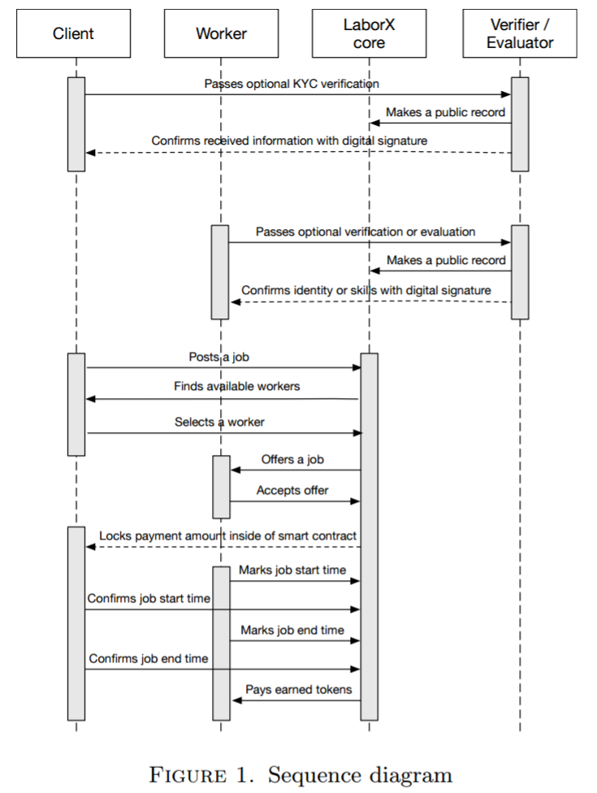
Figure 1. Sequence diagram
3.1. Actors
This section defines the six most important entities
within the system: the client, worker, evaluator, verificator,
provider, and the LaborX core (whose functionalities
are depicted in
The client - a person or party that requires work to be completed.
They create job(s) with key attributes (such as field of work, skills required, etc( 1 )) which gets posted to the ledger.
The client then retrieves a list of available and qualified workers which they can select based on preference.
The worker(s) may then accept the job and provide approximate estimates for the amount of time required to complete it.
At this point, the system will allow the client and worker(s) to begin direct communication, should it be desired.
Then the client has to agree on the estimations given by the worker.
Upon agreement, a smart contract will facilitate the withdrawal of funds (equivalent to the value of the estimated hours of work) from the client’s account to an escrow-like smart contract on the blockchain.
The funds will then be released on a per-hour basis to the worker as work is completed.
To ensure correct hours are paid, a stop-start timer is used.
As a worker arrives, they seek approval from the client to begin the timer and commence the paid work period.
The same is done at the end of the period or work segment.
The client can revoke the job before it begins and can withdraw the deducted funds from the escrow-like smart contract.
The client may give a rating to the worker upon job completion/termination and optionally a recommendation.
The worker - any person or party seeking jobs who is capable of working and getting paid.
A worker creates a public profile containing labour scopes, working hours, and other relevant information.
Based on this profile, a worker would be offered by LaborX to clients for jobs matching their labour scopes.
If selected, a worker will be notified and asked to provide time estimates to complete the specific job.
The worker is then able to contact the client to finalise details (if needed) before finalising the agreement.
The worker should then arrive at the negotiated time to begin the work.
The approval to start/stop the timer for paid work can then be given by the client, as described above.
Upon completion/termination of a job, the worker can rate the client and optionally provide additional comments.
The evaluator.
The highest ranked members of a community will be able to evaluate and confirm corresponding skills of workers, building a chain of trust.
In this way, clients will be sure that the assigned worker has all the required skills for completing the job.
Workers will be required to have a high rating and enough activity points to become an evaluator.
Evaluators may verify and endorse skills of other workers ensuring clients have a more accurate description of their potential workforce.
Workers with endorsed skills will typically have a greater chance to be selected for any given job by the LaborX core.
After performing worker’s skill assessment the evaluator publishes a record in blockchain.
Evaluator’s profile displays statistics of appraised workers and evaluator’s reputation among LaborX users depends on it.
The verifier - a worker who offers services to verify clients and workers in a particular region (See the functionality in Figure 1).
The fundamental role of verifiers is to check required documents for their respective areas, such as work permit, certificate, injury insurance or other types of insurance.
These entities are essential to adhere to local laws, enhance security, and potentially minimise spam issues.
Both parties (clients and workers) may choose a single or many verifiers to review their documents, based on their rating and popularity.
Each worker has a public profile and private data.
The public profile is available in the blockchain and is accessible to everyone.
The private data is verified and electronically signed by a verifier.
It is only available to a client after they enter into a contract with the worker (more information is given in Section 7).
The provider - an entity who has created a job board.
The nature of the blockchain means that participants are pseudonymous by default.
This opens wide opportunities for spammers, marketing bots and other parties whose behaviour would be disruptive for LaborX.
The decentralisation of the system means that there is no single authority who can ban these entities.
A proposed solution is to give participants ability to create job boards, where the creator is also the moderator.
Each board would have a rating from other participants and each participant having a threshold of activity points would be able to vote up or down on boards.
The job board creator will be able to appoint other members as moderators.
Each board member having sufficient activity points would be able to flag any suspicious entry for review and receive activity points for helpful reports.
The boards would be filtered by tags and sorted by rating in the client application to easily remove/filter all junk boards.
The job board creators also can enforce requirements for the clients and workers that want to use the board.
They could include a requirement to pass verification by one of the listed verifiers, to have at least specified minimal rating, to perform a job in defined fields of work, to accept payment in selected cryptocurrency, to be located in specified area etc.
LaborX core - a sub-system of the LaborX platform encapsulating the majority of the core inner functionality and blockchain-dependent logic.
This system provides the mechanisms that allow jobs, profiles, and other public data to be stored in the blockchain.
It is capable of searching for available workers in job boards based on location, field of work, and skills thus giving clients a choice to pick worker(s) that best suits their needs.
After a client makes this selection, LaborX core provides the functionality that sends notifications to the worker to accept/decline a specific job via Ethereum events.
LaborX core is also responsible for calculating, storing, and retrieval of rating on the blockchain.
Every client and worker will have a rating which increases/decreases as recommendations accrue after jobs are completed.
3.2. LaborX core functionality
LaborX core is a complex system powered by the Ethereum network.
It contains all users’ public profiles, completed jobs with description, executor, status, and mutual ratings.
However, considering the system complexity, we have chosen to distinguish LaborX core from LaborX DApp.
LaborX DApp functionality will include interface for creating profiles, verification, evaluation, searching workers, concluding contracts etc (see Section 6 for full description of features).
This section will provide a more specific description of the key parts of LaborX core and we will postpone further discussion of LaborX DApp to Section 6.
A job object (the programmatic object relating to a real-world job) will contain a location, provider used and work description.
The work description includes attributes such as field of work, job due date, address of ERC20 token contract (that will be used for payment), required skills, and further optional job-specific requirements.
A client would be capable of searching through the list of workers in job boards or choosing a familiar worker.
Fields of work and required skills can be selected from a list offered by the smart contract.
A location is also a selectable parameter that will typically represent a city/region.
If a city/region is large, then a district/sub-region may be specified.
A city/region includes all of its districts/sub-regions.
A location is used to map workers to nearby clients.
Precise addresses (for job locations) will be revealed to workers once the job has been mutually agreed on and solidified by the smart contract.
A job due date can be a present or future time.
If the current time is selected, then LaborX returns all currently available workers ready to start a work now.
If instead a future time was chosen, then the system will find workers available to work at the chosen time.
Once the worker accepts the job, the smart contract will publicly mark the worker as busy, preventing further bookings in that period.
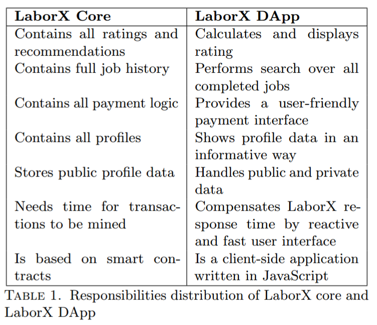
Table 1. Responsibilities distribution of LaborX core and LaborX DApp
3.3. Billing and penalties
Billing will be governed by the following scheme:
Once a worker’s estimates have been approved by the client, a smart contract withdraws the required tokens/currency from the client’s account.
If the work takes more time than initially estimated and approved by the client, then the smart contract verifies the client’s balance and automatically withdraws additional funds to account for the overtime.
As this is an automatic process, the worker can continue to work freely and be sure that their overtime will be paid.
This procedure repeats hourly.
The process stops if either the job is paused, or marked as finished, or the client runs out of money, or the smart contract reaches a maximum withdraw limit( 2 ).
If this limit is reached, the smart contract may ask the client to increase the maximum withdrawal limit.
If the client declines, the job is considered finished, and any remaining funds are released to the worker.
If the worker works less than the estimated time, the difference is transferred back to the client.
Part of the tokens paid for the job is automatically withdrawn as a fee (see more at Section 4).
Worker has an ability to pause and continue job timer at any time.
If the client is not satisfied with the worker, their accountability, or their work they can cancel the job at any time.
Nevertheless, the client is required to pay a minimum of one hour (which is a minimal time unit that can be paid).
The client may then leave a negative recommendation and rating that will negatively flag the worker for future clients.
A negative rating will also adversely affect evaluator’s reputation.
If the worker doesn’t start work within the agreed time, the client will not be charged but is still able to rate the worker and leave a comment.
It should be noted that client does not pay the worker’s transportation time and expenses.
Instead, they should be included in the worker’s individual rates.
3.4. Scalability and contract upgrades
The implementation of LaborX DApp, specifically the search and worker selection, will allow the system to be easily scalable.
Yet, due to the systems complexity, it is probable that software bugs will be discovered.
Therefore, a mechanism to upgrade smart contracts and core system functionality will be required.
LaborX will use the following approach:
(1) Application data will be stored in contracts that are separated from business logic.
(2) Each record will contain a version number.
(3) Each contract will have a constant external interface.
(4) No migration can happen without a user’s consent.
In this way, contracts can be upgraded without the need to migrate data. Switching to a new contract version is the smart contract equivalent of accepting terms of service, updated by a service provider.
Each user will have an option to either migrate to a new contract version or to continue using the current one.
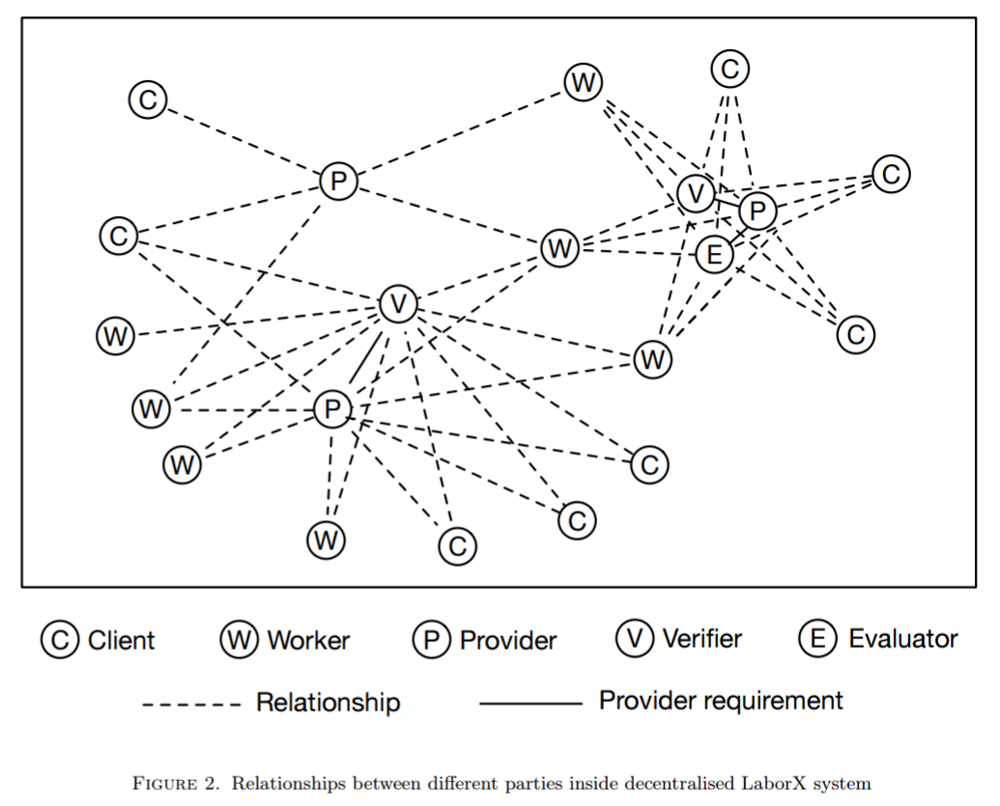
Figure 2. Relationships between different parties inside decentralised LaborX system.
4. Economic model
LaborX is a multi-currency service that will support any token that complies with the ERC20 standard[ 2 ] including, but not limited to, Labor Hour tokens.
A simple multi-currency wallet capable of receiving and sending any supported ERC20 token will be integrated into the LaborX platform.
Users will be able to pay and get paid by tokens they choose from a list of supported on job boards tokens.
Providers may list local currencies, allowing communities to pay for jobs in unusual digital assets, should both the client and the worker accept the currency by selecting the job board.
As mentioned in the previous section, the LaborX system will deduct 1%( 3 ) from each completed job part of which will go as a revenue to TIME token holders and other part to providers for their services.
Provider receives payment only for completed jobs posted on provider’s job board.
4.1. Benefits
For clients.
There are numerous benefits for clients.
Because of smaller mediator fees than in traditional labour hiring companies, the resulting work price will be lower.
Decentralisation of the service makes it fast, reliable, secure, and permanently available.
A public worker rating system ensures that clients are seeing profiles of real workers along with their unique histories and therefore genuine ratings.
The ability to pay with a variety of digital tokens makes the system universal and not tied to any particular country/region.
Furthermore, LaborX will implement an easy to use interface, paying serious attention to UX.
For workers.
Benefits for workers are also significant.
Due to lower fees than in traditional labour hiring companies workers may ask for higher hourly rates.
The most skilled and responsible workers with the best ratings will be highly sought after and may, therefore, demand a higher hourly fee than their not-so-amazing colleagues.
For the first time in the labour hire industry, diligent and attentive workers will be rewarded for providing better services.
The decentralised nature of LaborX will not only guarantee that workers will get paid, but will enable real-time payment to the worker as the work is completed.
Since the system is fully automated, the workers will be able to plan their schedules corresponding to their preferences.
5. Rating and activity points system
For every worker and client there are two metrics called rating and activity points.
The first describes how well a client or worker performs their duties and is dictated by their partners.
The second is a point system based on all LaborX activity.
The better the individuals rating (based on previous work), the higher the price they are be able to demand for an hour of work.
After a job is completed, both the client and worker are asked to rate to each other.
The rating is in the range between 1 and 10, where 1 corresponds to a total disaster and 10 represents exceptional work.
The rating system will be time and quantity aware.
By this, we mean that older ratings should contribute less to the current rating than recent ratings (i.e., the ratings are recency-weighted).
This means, for example, a bad rating accrued a year ago by a worker, can be redeemed by a series of recent good ratings, thus restoring the reputation of the worker.
Activity points are used only in the LaborX DApp and have a crucial security role by limiting the amount of available functionality to newcomers.
This limits threats such as spamming, posting advertisements with ambiguous links, or evildoers trying to overload the system with an infinite job posting.
Every new user begins with a single activity point which will automatically increase when performing various actions inside the app (see 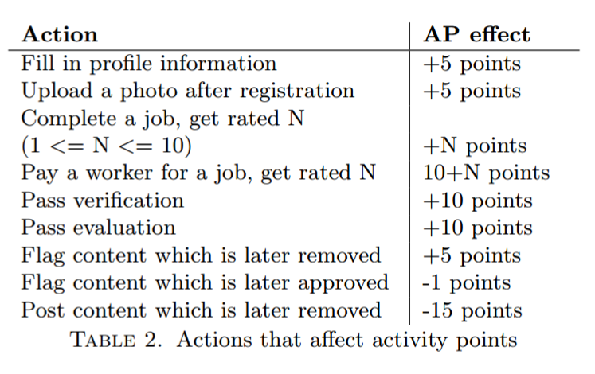
An alternative way to gain activity points is by verifying one’s identity with various verificators or by passing skill assessment with an evaluators.
The activity points count will always be greater than or equal to 1.
An example of activity point elevators are given in
Some of the proposed features that will require some amount of activity points is given in 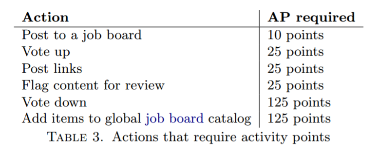
The listed values in these tables are examples only and may change during the implementation and system testing period.
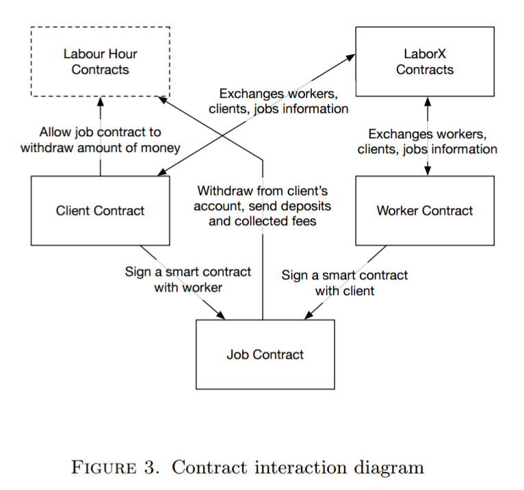
Figure 3. Contract interaction diagram
Table 2. Actions that affect activity points.
Table 3. Actions that require activity points.
5.1. Rating and activity points growth
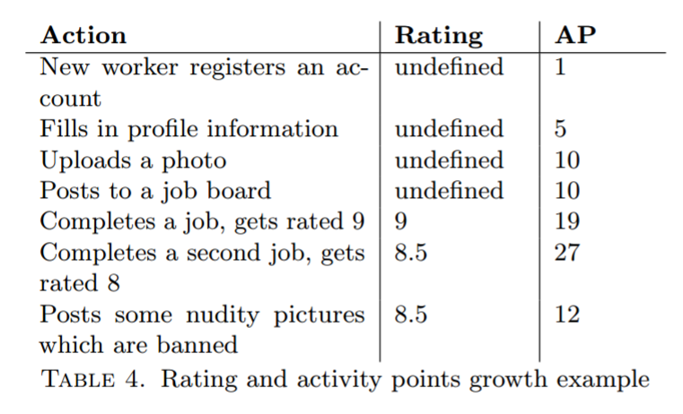
Table 4. Rating and activity points growth example.
6. LaborX DApp features
6.1. Verification and evaluation
One of the top priorities of the LaborX platform is to ensure that every client is comfortable letting workers into their house/workplace and every worker is provided with a safe workplace environment.
To this end, LaborX is designed with specific focus on worker/client confidence.
This is achieved through decentralised verification and evaluation features.
They will offer a range of verification possibilities allowing workers to choose those that suits them best.
The following gives a non-exhaustive list of possible options( 4 ):
• Verification.
Entities with high reputation could serve as verification hubs and be paid for their services by workers.
They will check that worker’s documents correspond to the worker’s identity, scan documents, publish document hashes[ 6 ] in the blockchain and confirm this action by signing the hashes with their digital signature (see Section 7 for more information).
• Evaluation.
The highest ranked members of a community will be able to evaluate and confirm corresponding skills of workers, building a chain of trust.
In this way, clients will be sure that the assigned worker has all the required skills for completing the job.
• Evaluation by Clients.
Any verified client may advertise individual worker’s skills after completing the job if some of them are exceptional.
This information would be used to separately promote the workers who are constantly rated 10/10.
6.2. Workers selection
According to the current model, the governing smart contract returns a selection of workers that fit the criteria of a given job posted by a client.
The LaborX DApp takes preference of workers who have more completed jobs and higher ratings.
The system may grow such that the ratio of workers to jobs becomes quite large.
It is therefore important that the LaborX DApp does some advanced filtering.
This means that the application should not show all workers capable of performing a given job, instead select only several of the available best workers with varying rates and ratings.
In this way, the most competent workers will get more work and will be paid more for their reputation.
Clients may also use different custom filters that will help them to find the most fitting worker to suit their needs.
They may also pick specific workers they are already familiar with.
The application will also utilise smart filtering to minimise the worker intersection between clients.
This is crucial for the system, especially when considering similar jobs.
6.3. Multi-currency support
The LaborX platform will include multi-currency support, making sure users can use different ERC20 tokens to purchase labour.
Each LaborX provider will be able to set cryptocurrencies that will be permitted for payments on their job boards.
Clients and workers who choose a job board, agree to use one of the supported methods of payment.
6.4. Search
High load testing and analysis would be performed while developing LaborX to determine exact implementation and architecture of the search system.
The main part of a search logic should be performed in the LaborX LaborX core.
Only Ethereum transactions that write to blockchain have gas limit and cost Ether.
The search operation is read-only, therefore it would perform computations on user’s Ethereum node and will not require paying Ether.
A worker-to-job matching will include complex queries and therefore require a significant amount of computational power of the machine where Ethereum node software is running.
Therefore LaborX DApp could handle part of the filtering and caching logic on client’s side.
This approach will significantly improve the user experience.
6.5. Messaging
LaborX will use a messaging system with an underlying protocol like Whisper[ 7 ], enabling client and worker to establish an encrypted connection.
These messages could be used to exchange job details, address, confidential instructions, etc.
The exact realisation will be decided at the time of development (specified in the LaborX road map), taking into account the potential research and new possibilities that will be available in 2017.
6.6. Features to be developed
Other features that are planned for LaborX but not described in this white paper include moderation and arbitration system powered by providers, usage of IPFS for data storage, and the Truffle framework for smart contracts on Solidity.
The LaborX DApp will have a modern responsive interface (see, for example, the ’Post new job’ and ’Edit worker profile’ wireframes in the appendix A).
7. Privacy
It is truly unsafe to publish sensitive, private data in a blockchain.
However, we have to eliminate the possibility of a worker re-registering to reset their profile.
Therefore, we have to maintain a balance between anonymity and notoriety.
To achieve this, each worker will have a publicly available blockchain profile containing their nickname (first name and the first letter of their surname), small photo, field(s) of work, skills, rating, rate, activity points, approximate location, a list of completed jobs and payments.
Optionally, a worker may apply for a document verification or a skill evaluation (see Sections 3, 6) which will be reflected in his public profile and confirmed by the electronic signature of the governing party.
There will be a data set which will never appear on the blockchain.
This includes, but is not limited to, the exact geolocation of the client and the worker, additional private instructions for the worker, document scans.
Hashes[ 6 ] of private data blocks will be published on the blockchain to prove that they have not been altered.
These hashes should also be electronically signed by submitter of the stored information and linked to the worker’s public profile.
In this way, only the signature and hash of the sensitive information will be publicly available, and any confidential data may be stored without revealing it to the public.
An entity which gains authorised access to the information will also be able to check the signature to prove the origin of information.
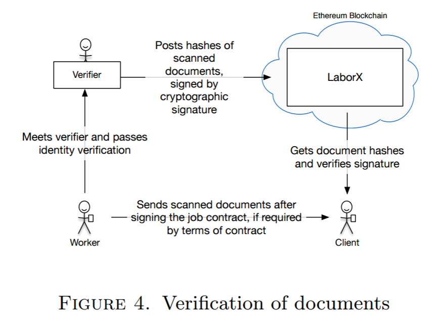
Figure 4. Verification of documents
8. Conclusions
This white paper proposes a decentralised system designed to revolutionise the labour-hire industry.
It will be capable of automatically matching available workers to corresponding jobs according to their location, field of work, skills, and reputation.
Using the Ethereum blockchain as a basis, this system can significantly lower fees for system maintenance, relative to traditional systems offering a similar service.
Moreover, decentralisation makes the system autonomous and global as it runs on Ethereum and is capable of using any currently existing ERC20[ 2 ] tokens.
This innovative system is only made possible by recent advancements in blockchain and cryptographic technologies.
Leveraging these technologies this system allows people to trade human labour - the most fundamental unit of economic value.
Glossary
activity points:
is an integer in a range of 1 to infinity which measures positive contribution to LaborX ecosystem.
The more activity points the user has, the more advanced actions they can perform.
See the full list in
client:
is a person that has some work and needs to get it done.
Client posts a job and pays for it. 2
DApp:
is an abbreviated form for decentralised application.
A DApp has its back-end code running on a decentralised peer-to-peer network.
Contrast this with an app where the back-end code is running on centralised servers. 3–7
evaluator:
a highly rated worker with lots of experience and reputation which prove they are a master in their field of work and thus can verify skills of other workers. 2, 5
job:
is some work or task to get done.
Job can be a list of tasks but all within one field of work. 2
job board:
is a publicly available database managed by the creator.
It will be implemented as a smart contract in Ethereum network.
More information in Section 6. 3, 5, 6
LaborX core:
this is a sub-system of the LaborX platform encapsulating the majority of the core inner functionality and blockchain-dependent logic. 2, 3, 6
ledger:
is a publicly available database that holds information.
It will be implemented as a smart contract in Ethereum network. 2
provider:
is an entity which offers its services to connect clients and workers through a job board because of legal, security, or spam issues.
Anyone can become a provider, and both parties (a client and a worker) could choose which providers they trust.
Providers get paid for their services by receiving a percentage of job payment fees. 2, 3, 5–7
rate:
amount of money that will be paid hourly to a worker. 1, 2, 6, 7
rating:
is an integer in a range from 1 to 10 (where 1 is a disaster and 10 is perfect) which measures
the quality of work done by a worker.
LaborX uses rating to select workers for a job. 2–6
verificator:
a worker with flawless reputation who offers services of verification for documents and
identity of other entities. 2, 5
worker:
is a person that is assigned to fulfil client’s job and get paid for it. 2
Appendix A. LaborX Wireframes
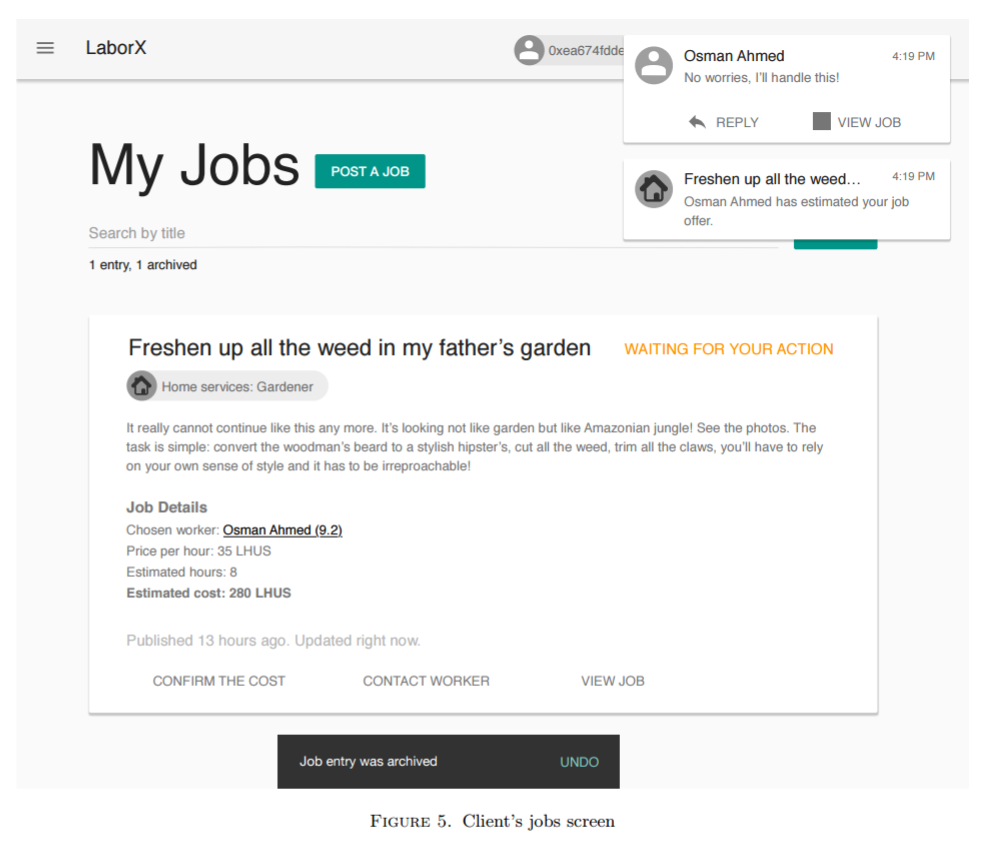
Figure 5. Client’s jobs screen10
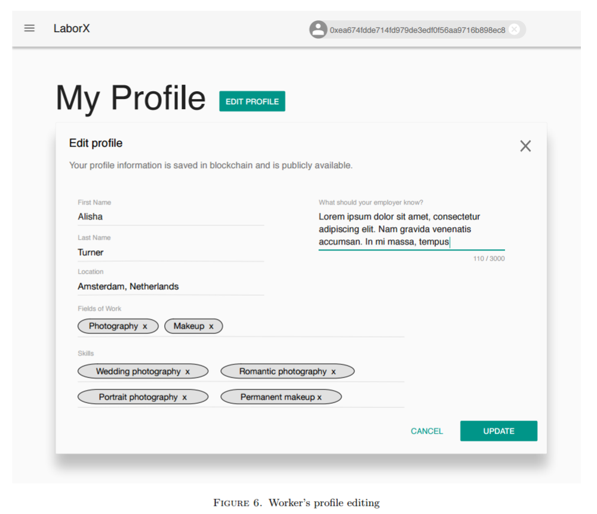
Figure 6. Worker’s profile editing